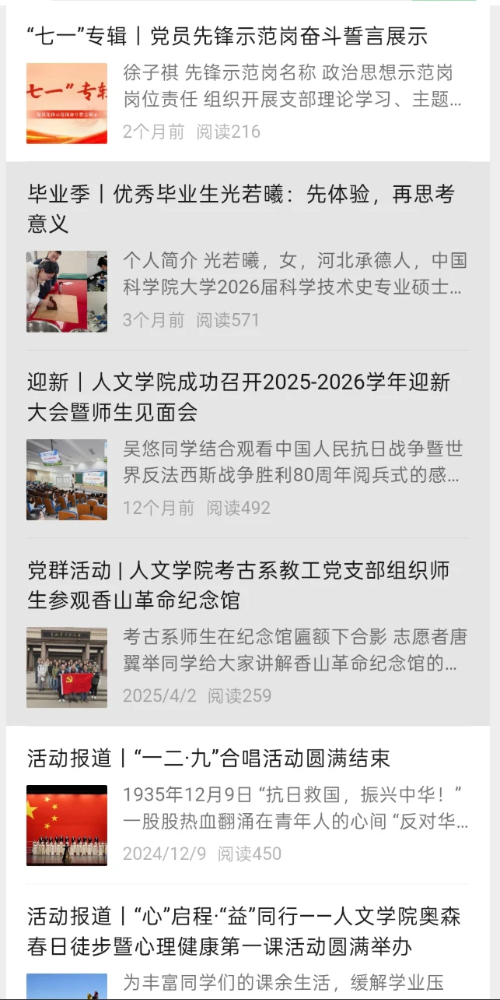
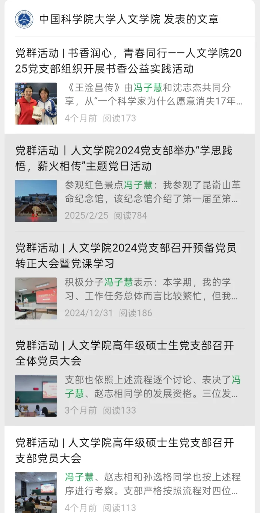

EDITORIAL & SOCIAL MEDIA
新媒体栏目运营
竹园1号书院 / 中国科学院大学人文学院
从本科书院新媒体到研究生学院公众号，我持续参与选题、写作与排版。围绕学生兴趣与校园文化，把活动信息、人物故事和日常观察整理成读者愿意打开的内容。
01我的工作
本科：参与栏目与内容策划
担任书院新媒体文案组组长，与团队共同策划“拾趣漫享”“竹意周谈”“竹梦心路小剧场”等栏目，参与校园生活、兴趣分享与心理主题的内容制作。
研究生：承担公众号日常编辑
参与学院公众号运营，完成图文排版、素材整理与内容审核，根据通知、预告、报道等不同需求调整信息结构。
让编辑工作可以持续交接
整理排版、文案、照片和发布流程中的注意事项，积累编辑规范与团队协作经验。
02项目成果
40+篇
本科参与或完成推文
110+篇
研究生累计排版
10+篇
研究生新闻稿及推文
本科数据依据个人简历；研究生数据截至2026年4月，为在校宣传工作累计。栏目截图包含团队内容，不代表每篇均由个人独立创作。
03作品与记录
点击图片放大查看；长图可在放大后继续向下滚动。


04经验总结
持续更新需要选题储备，也需要稳定的编辑流程。按照文章目的安排信息顺序，往往比增加视觉装饰更能帮助读者理解内容。